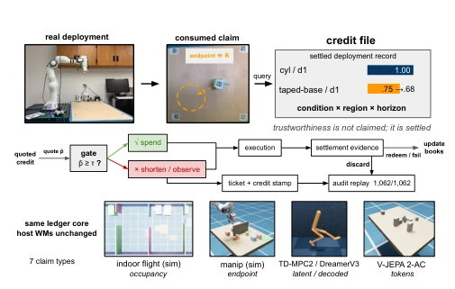
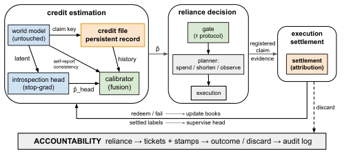
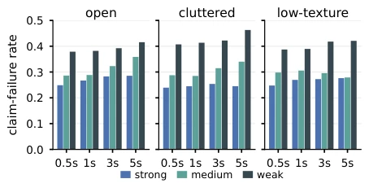
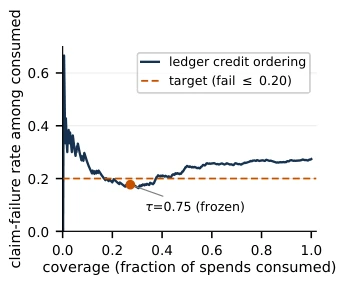
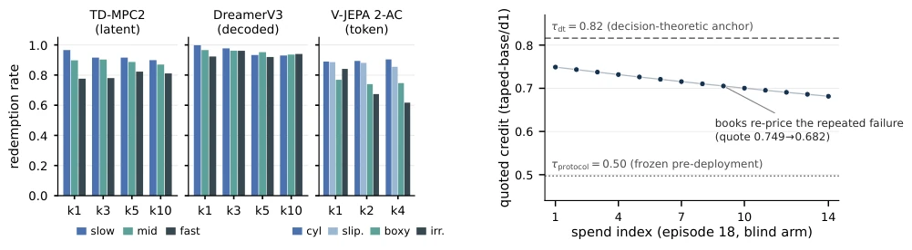

This paper transforms "trust" from the metaphysics inside the model into an auditable ledger, with a loud slogan: "Trust is not claimed, it is settled." This approach is quite fresh in the robotics community, as previously people either trusted model confidence or ensemble voting, often resulting in "confidently making mistakes". DreamLedger issues IOUs for each prediction, reconciles accounts afterwards, uses less or looks twice if credit is insufficient. The benefit is indeed reducing "burned imagination" by 62%. The downside is this ledger must be recorded on-site, offline data is useless, and if sensors drift, the ledger records inaccurately. However, being able to wrap this layer around large models like V-JEPA shows some generalizability. Overall, it is a pragmatic attempt to turn a "black box" into a "white box ledger", although the accounting process is somewhat computationally expensive, for safety, this ledger is worth keeping. It does not attempt to solve general uncertainty quantification, but focuses on the prediction granularity actually consumed by the planner. This "pay-as-you-go accounting" idea is pragmatic, but also means it cannot migrate across deployment points, belonging to a typical "local ledger".
研究动机Motivation
机器人决策依赖世界模型想象未来，但可靠性评估常停留在瞬时信号上，比如集成模型的离散度 [8] 或模型自报告的置信度 [9]。这些信号无法回答“在类似条件下，该模型过去表现如何”的问题。更严重的是，高置信度错误预测会制造虚假安全感 [6]。现有日志不记录决策依赖的预测及其结果，不符合高风险 AI 系统的审计要求（如欧盟 AI 法案 [7]）。特别是在分布偏移下，模型可靠性可能退化，而瞬时信号无法捕捉这种历史表现。因此，需要一种持久化的部署对象，将可靠性记录为可结算的信用文件，而非瞬时信号，以支持决策追溯和风险控制。
Robot decision-making relies on world models imagining the future, but reliability assessment often stays on instantaneous signals, such as the variance of ensemble models [8] or model self-reported confidence [9]. These signals cannot answer the question of "how did the model perform in the past under similar conditions". More seriously, high-confidence erroneous predictions create false security [6]. Existing logs do not record the predictions and their results that decisions depend on, failing to meet audit requirements for high-risk AI systems (such as the EU AI Act [7]). Especially under distribution shift, model reliability may degrade, while instantaneous signals cannot capture this historical performance. Therefore, a persistent deployment object is needed to record reliability as a settleable credit file, rather than instantaneous signals, to support decision traceability and risk control.

Fig. 1. DreamLedger overview. Top: real Franka tabletop deployment: a consumed prediction is frozen as a claim (endpoint within R; actual wrist-camera view); settled history quotes ˆp and gates reliance; attributable execution evidence updates the books; every spend is audit-replayable (all values are deployment records). Bottom: the same ledger core, with host models unchanged, spans three simulated domains and three established open-source world models, settling seven claim types (Sec. V-C).
The overall process is divided into claim registration, execution settlement, credit file, and gating. First, each prediction consumed by the planner is registered as a "claim", frozen as a unit of specific conditions, region, and prediction duration. After execution, actual observation results are compared with predictions to complete "settlement", excluding measurement attribution. Settlement results are stored in a credit file, indexed by condition × region × time zone. For sparse data units, a lightweight introspection head is introduced, predicting settlement probability based on latent states, fused with empirical records. The introspection head keeps the main model unchanged via stopped gradients, only fine-tuned using deployment results, ensuring the prediction path is not disturbed. Finally, the planner queries the credit value; if below threshold, shorten the dependency horizon or trigger observation. All dependency events generate dependency tickets and replayable logs, ensuring auditability. This layer does not modify the main model architecture, only mounts interfaces, supporting decoding, latent space, and token space.

Fig. 2. DreamLedger mechanism. Execution-settled history and model-side signals produce quoted credit ˆp to gate reliance; execution settles registered claims to update the books and supervise introspection, while reliance and outcomes remain auditable.
Evaluated on three simulation domains: indoor flight, tabletop manipulation, and 2D navigation, and a real Franka robotic arm. Mounted unmodified DreamerV3, TD-MPC2, and V-JEPA 2-AC. Metrics include "burned imagination" rate, success rate, and collision rate. Results show credit gating reduced burned imagination by 62% (95% CI 43–81%), success rate remained flat. Under matched risk targets, verification probe dropped from 1.00 to 0.36/episode. Ablation shows fusion improves ECE in thin records. In real deployment, 1062 physical spends were replayable for audit. It was found that claim failure rate varies monotonically with model strength dose, and the credit file remains operational under real sensor noise, proving cross-domain generalization capability.

Fig. 3. Oracle claim failure on the shared held-out distribution. Within each horizon group, bars ascend strong →weak: failure is dose-monotone in all 12 cells, with horizon compounding within each dose.

Fig. 4. Risk–coverage over 540 settled warmup spends for the weak model. τ is selected at the pre-stated target and frozen before evaluation.

Fig. 6. A real deployment failure priced online. Fourteen identical no- contact pushes in a blind-arm episode leave the object stationary, with each claim failing at ≈9.5 cm. Consumed-cell credit falls online but remains between the frozen protocol threshold and decision-theoretic anchor, separating estimation from intervention.